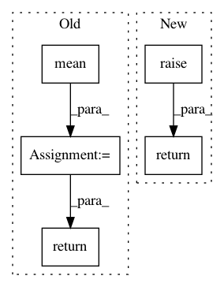

bea3a486261d3f6238316224605b684db1e5bca7,Tars/models/ml.py,ML,train,#ML#Any#,19
Before Change
self.optimizer.zero_grad()
log_like = self.p.log_likelihood(train_x)
loss = -torch.mean(log_like)
// backprop
loss.backward()
// update params
self.optimizer.step()
return log_like, loss
def test(self, test_x):
self.p.eval()
After Change
self.p.train()
self.other_distributions.train()
return super().train(train_x, **kwargs)
def test(self, test_x, **kwargs):
self.p.eval()
self.other_distributions.eval()
In pattern: SUPERPATTERN
Frequency: 4
Non-data size: 5
Instances
Project Name: masa-su/pixyz
Commit Name: bea3a486261d3f6238316224605b684db1e5bca7
Time: 2018-10-16
Author: masa@weblab.t.u-tokyo.ac.jp
File Name: Tars/models/ml.py
Class Name: ML
Method Name: train
Project Name: masa-su/pixyz
Commit Name: bea3a486261d3f6238316224605b684db1e5bca7
Time: 2018-10-16
Author: masa@weblab.t.u-tokyo.ac.jp
File Name: Tars/models/ml.py
Class Name: ML
Method Name: test
Project Name: masa-su/pixyz
Commit Name: bea3a486261d3f6238316224605b684db1e5bca7
Time: 2018-10-16
Author: masa@weblab.t.u-tokyo.ac.jp
File Name: Tars/models/custom_loss_model.py
Class Name: CustomLossModel
Method Name: test
Project Name: masa-su/pixyz
Commit Name: bea3a486261d3f6238316224605b684db1e5bca7
Time: 2018-10-16
Author: masa@weblab.t.u-tokyo.ac.jp
File Name: Tars/models/custom_loss_model.py
Class Name: CustomLossModel
Method Name: train